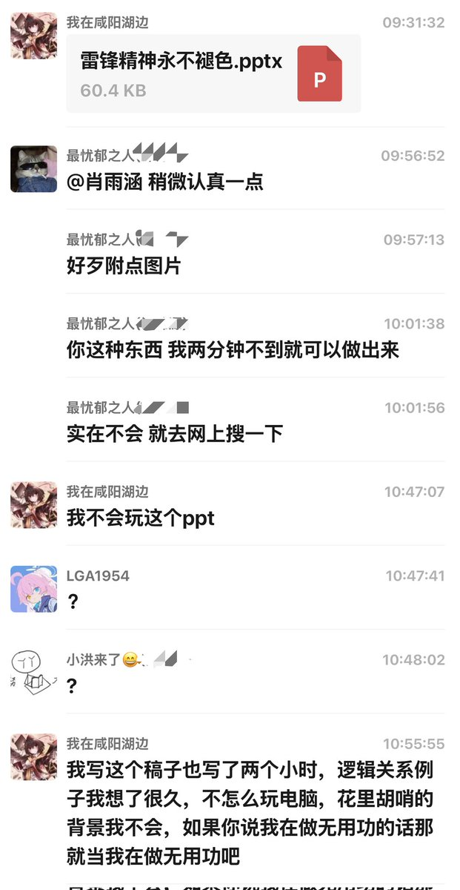
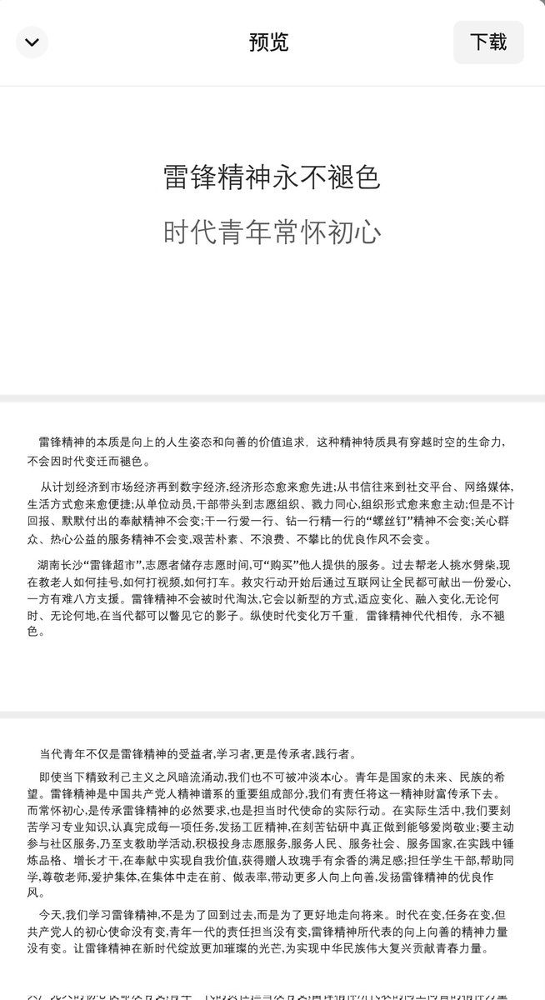

小虚空🍥
@tokerumaisurii
你我等绝大部分人都没有足够好的排版和审美水平让幻灯片放图还顺眼，尤其非整页插入。
少即是多，非补足关键的表现力不要滥图。
你缺少什么要表达，或者只是为“它得有图”的花架子交差？
一份好的演讲片甚至该更简单，减轻观者一边要读一边要听的心智负担。轻快地理好视觉层次，就够了。
就像地铁导视。


JYUSHITI拾柒
@JyushitiYizuka
我真求你了
当代大学生急需学会如何使用电脑 https://t.co/5mwE7eR3ph